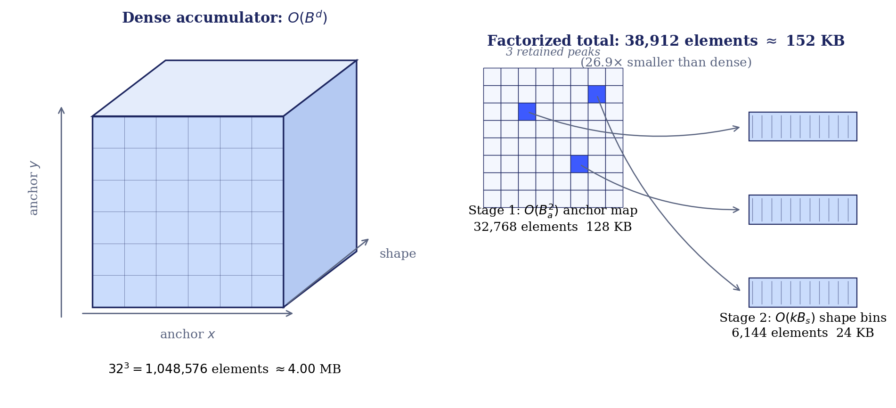
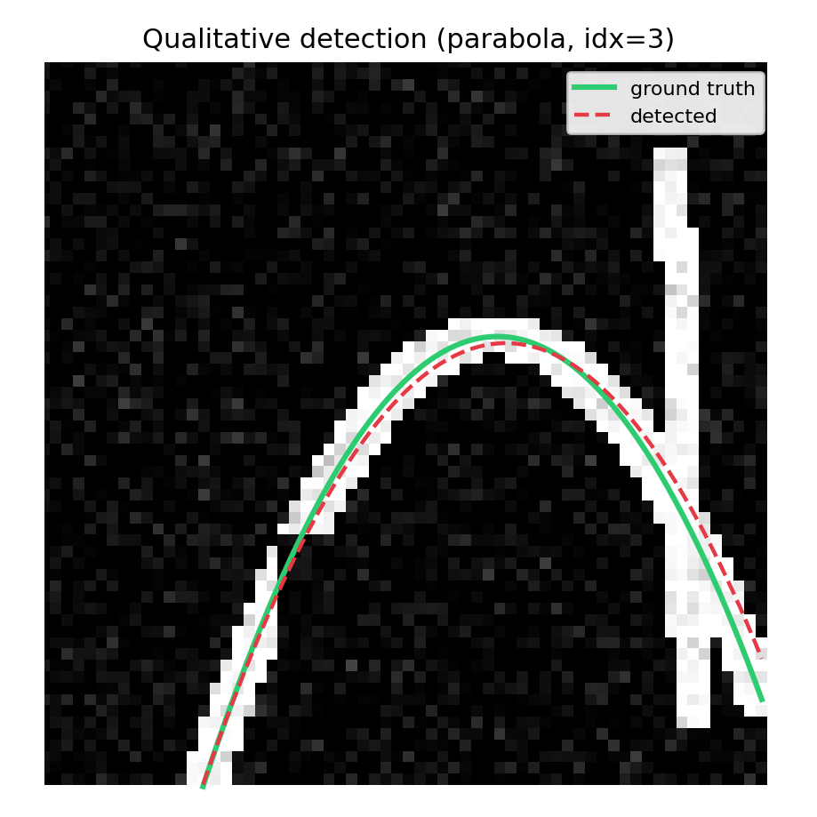

The idea behind my paper "Beyond Lines: A Factorized Deep Hough Transform for Parametric Curve Detection", explained without equations.
Suppose you want a computer to find a straight line in a noisy photo. One classic trick, invented in the 1960s and called the Hough transform, works like an election. Every bright pixel in the image gets to vote for all the lines that could pass through it. A pixel on its own knows very little, but if a real line exists in the picture, hundreds of pixels along it end up voting for the same candidate. Count the votes, find the winner, and you have found your line, even if parts of it are hidden or the image is noisy. No single pixel needs to be trustworthy. The agreement is what matters.
A 2021 paper called the Deep Hough Transform gave this old idea a modern upgrade. Instead of letting raw pixels vote, it lets a neural network's learned features vote. The network learns what "looks like part of a meaningful line" and the voting machinery turns that local evidence into whole detected lines. It works well, and it is fast.
Voting needs a ballot box for every possible candidate. A straight line can be described by two numbers, its angle and its distance from the center, so the full collection of candidate lines fits in a small two-dimensional table. Cheap.
Most other shapes need more numbers. An ellipse, the shape of a tilted circle, needs five: where its center is, how long its two axes are, and how it is rotated. If you build a ballot box for every combination of five numbers, the table explodes. At the resolution used in my experiments, the difference looks like this:
One fair caveat: the 4 GB assumes 32 bins on every shape axis, while the cascade uses a coarser grid of 216 shapes. A dense table on that same coarser grid would be about 27 MB, so the like-for-like saving is roughly 117 times, not thousands.
I never built the 4 GB table. That number is arithmetic, and the point is exactly that nobody would want to build it: it would not fit alongside a neural network on a typical graphics card. This is why the deep voting idea stayed with straight lines. The ballot boxes would not fit in the building.
The paper splits the election into two rounds. The same idea appears in older, non-neural Hough methods. The new part is making it work on learned features inside a network that trains end to end.
Round one asks only "where." Many curves have a natural anchor point: a parabola has a vertex, a circle and an ellipse have a center. Finding just the anchor is a cheap two-dimensional search, the same size as the original line problem, however complicated the full shape is.
Round two asks "what shape," but only at the winners. Once a handful of promising anchor locations are found, the method opens a small, detailed ballot box at each one: given that something is centered here, which curvature, size and tilt does the evidence support?
Most of the giant table would have been spent on locations where nothing was happening. By committing to locations first, the method never builds it.
One thing to be clear about: you tell the method which kind of curve to look for. It finds parabolas, or circles, or ellipses, as you choose. It does not discover shapes on its own. Classical Hough methods work the same way.

Reasonably, and I tried to test it honestly. The test images are synthetic: noise, hidden patches and decoy line segments added to parabolas, circles and ellipses. For fairness, the detection threshold is chosen on separate validation images, and the competing methods get the same tuning.
The result is a tie, not a win. Against RANSAC, a classical method that repeatedly guesses a curve from a few points and keeps the best fit, the new method scores the same on parabolas (0.71 against 0.70) and circles (0.74 against 0.74). On ellipses it is slightly behind (0.38 against 0.41). So the claim is not that voting detects curves better. It is that voting can now be done on learned features for these shapes without the memory blowing up.

I also compared against two small learned detectors that guess curve parameters directly, with no built-in geometry. They scored about 0.15 and 0.13 on parabolas, far below the geometric methods. I would not read too much into that. They were small and trained briefly, and I only ran them on parabolas.
The two rounds are not equally good. If I hand round two the true anchor locations, it detects curves very well (0.94). With the anchors found by round one, the score drops to 0.71. So almost all the remaining error comes from the "where" step, not the "what shape" step.
One failure is easy to see. When two curves have their anchors within about 8 pixels of each other, round one merges them into a single peak and the score falls by about 0.2. Giving round one more candidate shapes to try helps too: going from 6 to 16 raised the score on one test run from about 0.70 to 0.78, though I have only run that once. A further finding surprised me: how round one combines evidence from different guessed shapes matters a lot. Taking the best guess instead of a smoothed combination raised the score from 0.51 to 0.70.
Curved structures are everywhere computers look: lane markings on roads, vessels and anatomical outlines in medical scans, tool and needle trajectories in surgical imaging. The Hough transform's voting principle is also a cousin of the mathematics behind CT scan reconstruction, which is part of what drew me to the problem. The paper is not a finished detector for any of these. It shows that deep voting can extend past straight lines with memory that stays small, and it pinpoints what to improve next.